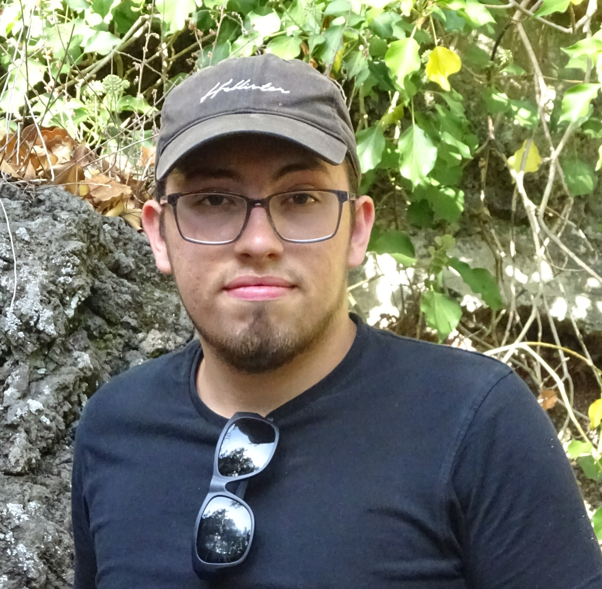

Ik ben Maarten Janssens. Ik ben 21 jaar en woon in Kasterlee. Ik heb een hamster genaamd streep. En thuis hebben wij nog veel andere beesten, die zijn niet van mij maar ik verzorg ze wel. Ik woon nog bij mijn ouders thuis. Ik ben goed in wiskunde en met computers kan ik wel overweg. Ik ben niet goed in talen, daar heb ik altijd wel moeite mee gehad. Met mijn handen ben ik niet de handigste persoon. In het middelbaar zat ik op HT²O en volgde ik de studierichting hout- en bouwkunde. Daar heb ik 6 jaar op school gezeten. Ik heb een se-en-se jaar gedaan in de richting veiligheid. Dit in het Heilig-Graf in de Klinkstraat in Turnhout. Daarna ben ik de opleiding leerkracht lagere school begonnen op de Thomas More in Vorselaar. Maar dit was niet voor mij weg gelegd. In mijn vrije tijd ben ik vooral bezig op mijn laptop.
